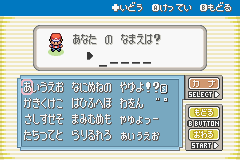

Japanese Text on Computers
日本語の不思議
A tour of the writing system, the fonts, and the
engineering problems they cause.
One sentence, three scripts
私 は コーヒー を飲む 。(I drink coffee.)
私 ,
飲 :
Kanji (Chinese-origin)
は ,
を ,
む :
Hiragana (grammar / verb endings)
コーヒー : Katakana (loanword from English "coffee")
One sentence, three scripts mixed together. This is
normal Japanese.
The three writing systems
Hiragana
あ い う え お
~46 chars, syllabic, for native words / grammar
Katakana
コ ー ヒ ー
~46 chars, syllabic, for loanwords / emphasis
Kanji
飲 食 言 語
thousands, logographic, borrowed from Chinese
Same sounds, two scripts
Columns = vowels, rows = consonants. Each cell
has the
hiragana
and its
katakana
twin (same sound, different glyph).
a
i
u
e
o
·
あ ア い イ う ウ え エ お オ
k
か カ き キ く ク け ケ こ コ
s
さ サ し シ す ス せ セ そ ソ
t
た タ ち チ つ ツ て テ と ト
n
な ナ に ニ ぬ ヌ ね ネ の ノ
h
は ハ ひ ヒ ふ フ へ ヘ ほ ホ
m
ま マ み ミ む ム め メ も モ
y
や ヤ ·
ゆ ユ ·
よ ヨ
r
ら ラ り リ る ル れ レ ろ ロ
w
わ ワ ·
·
·
を ヲ
n
ん ン ·
·
·
·
The gojūon ("50 sounds") grid. Every hiragana has
a katakana twin pronounced exactly the same, so
as a learner you learn ~46 sounds, then two
scripts on top of that. Empty cells (yi, ye, wi,
wu, we) either never existed or fell out of use.
Small kana: yōon
Add a small
ゃ ゅ ょ
after any i -column kana →
combined syllable.
+ ゃ
+ ゅ
+ ょ
き ki
きゃ
kya
きゅ
kyu
きょ
kyo
し shi
しゃ
sha
しゅ
shu
しょ
sho
ち chi
ちゃ
cha
ちゅ
chu
ちょ
cho
り ri
りゃ
rya
りゅ
ryu
りょ
ryo
しゃしん
(photo) ,
きょう
(today) ,
りょこう
(trip)
Yōon (拗音). Only the i-column can take the
small modifier; き+ゃ becomes a single
syllable "kya". Same applies in katakana for
loanwords: チャ, ジュ, ショ.
Small kana: sokuon
A small
っ
(like
つ , shrunk) doubles the next consonant.
Without
With small っ
おと
oto
おっ と
ot to
sound → husband
かこ
kako
かっ こ
kak ko
past → parentheses
まて
mate
まっ て
mat te
wait (root) → "wait!"
In speech: a brief glottal stop. In writing:
a tiny
っ that
changes the word entirely.
Sokuon (促音). Minimal pairs (same kana,
only the small つ differs). Native speakers
hear the doubled consonant immediately; OCR
has to spot a glyph that's literally half
the size of its neighbours.
Voicing marks: dakuten
゛
Add
゛
to flip a consonant from
unvoiced to
voiced .
Applies across whole rows.
Unvoiced
+
゛
→ voiced
Sound shift
k-row
か
ka
が
ga
k → g
s-row
さ
sa
ざ
za
s → z
t-row
た
ta
だ
da
t → d
h-row
は
ha
ば
ba
h → b
Rule extends across all 5 vowels:
か き く け こ →
が ぎ ぐ げ ご
Dakuten = "muddy mark" (濁点). It marks
voicing: the difference between an
unvoiced k and a voiced g, etc. Same mark,
same rule, applied to four whole rows.
H-row's special twin: handakuten
゜
A small
゜
circle (only valid on the h-row) gives
the unvoiced plosive
p .
base
は
ひ
ふ
へ
ほ
ha · hi · fu · he · ho
+
゛
ば
び
ぶ
べ
ぼ
ba · bi · bu · be · bo
(voiced)
+
゜
ぱ
ぴ
ぷ
ぺ
ぽ
pa · pi · pu · pe · po
(plosive)
Only row with three forms. The h-row is
phonetically unstable, so it picked up an
extra diacritic over the centuries.
Handakuten (半濁点, "half-muddy mark"). It
only attaches to は ひ ふ へ ほ. The h-row
is special because the original sound was
closer to /p/. It drifted to /h/ over
time, and the diacritic is how Japanese
preserves the older /p/ pronunciation in
words that need it.
How many glyphs?
Log scale: every order of magnitude is the
same width on screen.
Linear scale: Latin and Jōyō almost vanish
next to the full CJK set.
Latin: ~95 printable ASCII characters. Joyo kanji
list (taught in school): 2,136. JIS X 0208 (the
standard old Japanese encoding): 6,879. CJK Unified
Ideographs in Unicode today: ~98,000 (but most are
rare or historical). Press right to flip from log
to linear scale.
What does this cost on the web?
woff2, same font family (Noto Sans / Inter) where possible.
A typical English webfont is tens of KB. A full
Japanese webfont is multiple megabytes. This is why
the CSS @font-face spec has unicode-range subsetting,
so the browser only downloads the glyphs it
actually needs to render.
Subsetting to the rescue
@font-face {
font-family: "Noto Sans JP";
src: url("noto-jp-subset-hiragana.woff2") format("woff2");
unicode-range: U+3040-309F; /* hiragana block only */
}
Google Fonts splits Noto Sans JP into ~120 subsets.
The browser downloads just the chunks that contain
characters on the page.
Or: skip kanji entirely
Pokémon FireRed (Game Boy Advance, 2004). All
UI in hiragana & katakana, no kanji.

"あなたの なまえは？ ". Note the
space between
あなたの and
なまえは , and the
entire keyboard is just kana.
Real Pokémon Emerald name entry. Top:
"What's your name?" with a phrase break (the
gap between あなたの and なまえは). Below: the
full input keyboard, no kanji anywhere in
the UI. Same gojūon grid as our earlier
slide.
What in-game dialogue looked like
しんじん トレーナーの きみは
→ with kanji:
新人トレーナーの 君は ポケモンと
冒険を 始める！
"You, a rookie trainer, set off on an
adventure with Pokémon!"
Kana-only sample on top, kanji rewrite in
the middle, English gloss at the bottom.
Why drop kanji?
Each kanji is a 16×16 bitmap → 32 bytes.
68 KB of pure glyph data.
For comparison: Pokémon Red & Blue
(Game Boy, 1996) shipped
the entire game in
373 KB .
A full kanji set would have been
~18%
of the whole game, just for the letters.
Easier: ship the 92 kana glyphs, skip kanji
altogether.
Pokémon Red/Blue were on 1 MB (8-megabit)
Game Boy cartridges. Devoting 68 KB to a
character set you could skip was a luxury
nobody could afford. Even the GBA era
(16 MB cartridges) inherited the
hiragana-only convention.
But then: readability tanks
こうこうにいきます
Could be:
高校 (high school) /
孝行 (filial piety) /
後攻 (going second)
/ 高々 (at most)…
Solution Pokémon adopted:
add spaces between phrases , a thing Japanese
normally doesn't have .
Without kanji, homophones can't be told apart
in writing. Even native speakers find pure
hiragana exhausting to read. So games inserted
explicit phrase breaks via spaces.
Hardware caught up
Year
Game (platform)
ROM size
Kanji policy
1996
Red & Blue (GB)
373 KB
no kanji
2004
FireRed (GBA)
4.95 MB
still no kanji
2006
Diamond/Pearl (DS)
25.81 MB
kanji as an option
2013
X/Y (3DS)
1.7 GB
kanji on by default
Note 2004: games grew over 13×, but the
convention of "Pokémon is in kana" had
already stuck. Hardware alone didn't flip
it.
The same problem the web solved with
subsetting, games solved by waiting for ROM
to get cheap (and waiting for the
convention to thaw).
No spaces. Anywhere.
お すし を 食べ ました
Where does each word start?
お
(honorific)
+
すし
(sushi)
+
を
(object marker)
+
食べ
(eat, verb stem)
+
ました
(polite past)
Need a dictionary
and grammar rules to do this.
Compounds make it worse
電車
= 電 (electricity) +
車 (vehicle) =
train
図書館 = 図 + 書 + 館 = library
A naïve Ctrl+F for
車 finds
電車 ,
自動車 ,
車 道自転車 …
you almost never want that.
…but compounds can be poetry
Each character carries meaning. Stack them and
you get a tiny picture.
一本気
ipponki
one · book · energy
single-minded
木漏れ日
komorebi
tree · leaked · sun
sunlight filtering through leaves
走馬灯
sōmatō
running · horse · lantern
life flashing before your eyes
猫舌
nekojita
cat · tongue
can't handle hot food
積ん読
tsundoku
pile up · read
books bought but never read
腹黒い
haraguroi
belly · black
scheming, two-faced
一本気 is the audience's hook: literal
characters are "one · book · energy" but it
actually means single-minded /
wholehearted. 木漏れ日 (komorebi) and
積ん読 (tsundoku) tend to delight
English-speaking audiences. Both have
spread into English as loanwords because
they name things English doesn't have a
word for.
Counters: count by shape
Japanese has
no grammatical plural . But it has
~50
counter words that change based on the
shape of the thing being counted.
Japanese
Counter
Used for
2 cars
車を2台
台 daimachines
2 cats
猫を2匹
匹 hikismall animals
2 horses
馬を2頭
頭 tōlarge animals
2 books
本を2冊
冊 satsubound things
2 sheets of paper
紙を2枚
枚 maiflat thin things
2 pencils
鉛筆を2本
本 honlong cylindrical things
2 rabbits
うさぎを2羽
羽 wabirds… and rabbits 🐇
So localization has to know which counter goes
with which noun. (We'll come back to this.)
Counters (助数詞 josūshi). Japanese verbs and
nouns don't change for plurality, so the
counter does the work. The rabbit quirk: in
Buddhist Japan, monks weren't supposed to eat
four-legged animals, so they counted rabbits
like birds. The convention stuck. Modern
speakers often default to the generic 個 (ko)
when they forget the right counter, the way
English speakers default to "thing."
What i18n libraries can't do for you
English needs plural forms. Japanese needs
something CLDR doesn't ship.
new Intl.PluralRules('en').select(1) // "one"
new Intl.PluralRules('en').select(2) // "other"
new Intl.PluralRules('ja').select(1) // "other"
new Intl.PluralRules('ja').select(2) // "other"
Japanese has exactly one plural category.
The library has nothing to do.
The real problem isn't grammar, it's
lexical :
猫 →
匹 ,
本 →
冊 ,
鉛筆 →
本 …
(per-noun, not per-language; no
standard library knows this)
Plus the
phonetic mutation :
the number itself changes the
counter's reading.
一 本 ippon 三 本 sanbon 六 本 roppon 十 本 juppon
What apps actually do:
hard-code per noun, or punt to
個
(ko) , the generic "thing" counter.
Three layers stacked on top of each other:
(1) Plural rules: CLDR ships them, Japanese
barely needs any. (2) Counter mapping:
lexical, per-noun. Your translation file
has to encode that "cat" pairs with 匹.
(3) Phonetic mutation: 一/三/六/八/十 mutate
the consonant of many counters; this is
memorized per counter, not derivable from
rules. Most production apps just default
to 個 (ko) and accept that it sounds a bit
off.
So how do learners read?
A browser extension that tokenizes + dictionary-looks-up
under your cursor.
Yomitan
Yomitan in one sentence
Hover any Japanese text →
食べました →
食べる
(deinflected to dictionary form)
Shows readings, meanings, frequency, pitch
accent
Bring your own dictionaries
Bring your own dictionaries
Yomitan ships empty. You import whichever
dictionary files suit how you read.
JMdict
The community Japanese ↔ English
dictionary. The default starting
point.
大辞泉 · 大辞林
Monolingual JP ↔ JP, what native
speakers reach for.
Pixiv encyclopedia
Anime, manga, slang, internet
coinages.
NHK pitch accent
Where the pitch rises and falls
within a word.
Frequency lists
BCCWJ (newspapers), anime subs, light
novels. "Is this word common?"
Your own
Format is plain JSON. People ship
Anki-linked, medical, legal,
dialect-specific dicts.
Yomitan's dictionary format is public JSON.
Anyone can package one, and the community
ships hundreds, including specialty stuff
like medical Japanese, kansai-ben dialect,
or fandom glossaries.
Longest match wins
Hover anywhere. Yomitan reads forward
from your cursor and picks the
longest entry it can find.
図 書 館 にいきます
図書館に
✗ not a word
図書館
✓ library
図書
books (skipped)
図
diagram (skipped)
So hovering 図 in this sentence pops up
library , not "diagram",
even though both are valid.
Greedy longest-match is the standard
tokenization strategy: from a given
position, try the longest possible
dictionary key and back off only if nothing
matches. Means hovering the first character
of a compound gives you the whole compound,
which is almost always what you want.
Live demo
→
NHK Easy: ne2026052112586 ↗
Open the link, hover any sentence.
今日は寿司を食べました。
Click the link to open the NHK Easy article
in a new tab. Hover 食べました and show that
Yomitan deinflects to 食べる. Then hover a
compound noun. Then close and come back.
And how do you type all this?
Reading was one side. The other side is
input: the
IME
(Input Method Editor). Built into every
desktop, phone, and browser.
→
2. IME auto-converts to kana
にほんご
→
3. Press space, pick kanji
日本語
Three layers of conversion between the
keyboard and what lands in the document.
The IME sits between your keystrokes and
your text input. Every Japanese desktop,
phone, and IDE has one. Google IME and
Microsoft IME are the desktop standards;
macOS ships its own. They learn your
preferences over time, so common kanji
choices float to the top.
Picking from candidates
Press space again. The IME shows every
kanji string the kana could possibly spell.
にほんご
[space]
日本語
Japanese language
★ default
二本後
"after 2 cylindrical things"
2本後
mixed numeral + counter
にほんご
leave as hiragana
ニホンゴ
force katakana
Arrow keys or number keys to pick. The IME
learns your preferences and reorders next
time.
The candidate picker is the inverse of
Yomitan's longest-match. Yomitan reads
forward from a cursor and picks the longest
kanji string. The IME starts from kana and
expands outward to every possible kanji
rendering. Both are non-trivial dictionary
lookups under the hood.
How many kanji do you actually need?
Approx. cumulative coverage of running newspaper
text by the top-N most frequent kanji.
Classic long-tail distribution. The first 500
kanji buy you 80%. The next 1,500 only get you to
97%. After that you are spending kanji on
diminishing returns: names, archaic terms,
specialist vocab. Press right to overlay the
Jōyō kanji marker at 2,136; pairs with the
next slide.
The official list: Jōyō kanji
常用漢字 :
"regular-use kanji"
2,136
characters on the official list
(since the 2010 revision)
Grades 1–6
1,026
Grades 7–9
1,110
Defined by the government. Schools,
newspapers, and official documents commit
to staying within this set.
Anything outside → write in kana, or add
furigana.
So "~2,000 kanji" on the previous chart
isn't arbitrary. It's the curriculum.
Jōyō kanji (常用漢字, "regular-use kanji"). The
list was first set in 1946 as Tōyō kanji
(1,850), renamed to Jōyō in 1981 (1,945), and
most recently expanded in 2010 to today's
2,136. The 1,026 taught in elementary school
are sometimes called gakushū / kyōiku kanji
("study kanji").
Furigana: kanji with training wheels
Tiny kana printed above (or beside) kanji
to show how to read them.
漢かん 字じ
←
reading shown above
私わたし は学がっ 校こう に行い きます。
Where you see it: children's books, manga,
learners' material, place & person
names with rare readings.
Furigana (振り仮名). Originally a print
convention: small kana set above kanji to
help readers who don't know that
character. Manga uses it heavily because
younger readers haven't learned all the
kanji yet. Newspapers add it to rare names.
HTML ships with <ruby>
The web has a native element for exactly
this, for over 20 years, in every
browser.
<ruby>
漢字
<rp>(</rp><rt>かんじ</rt><rp>)</rp>
</ruby>
Renders as:
漢かん 字じ
<rt>: the small
"ruby text" annotation
<rp>: fallback
parentheses for browsers without ruby
support (modern browsers ignore them)
Also handy for: chemical formulas
(H2two O), abbreviation
expansions, screen-reader-friendly
pronunciation hints.
The <ruby> element is one of those
underused gems. The W3C spec is
specifically motivated by CJK typography,
but the element works fine for anything
you'd want "this above that" annotation
for.
Stroke order matters
語
0 / 14 strokes
Replay
Stroke data: KanjiVG (CC BY-SA 3.0)
Stroke order isn't just calligraphy etiquette. It
drives handwriting recognition on phones and DS
games. Get the order wrong and the model picks the
wrong kanji.
Reading text from images
OCR : Optical Character
Recognition. Pixels in, text out.
You use it constantly:
Google Lens, Apple Live Text
Searchable PDFs, document scanners
Receipts, business cards, license plates
Translating signs and menus on the go
For English:
largely solved . For Japanese:
still rough .
Brief OCR primer before the challenges. Most
of the audience has used it without thinking:
Live Text on iPhone, Lens on Android,
Adobe's PDF OCR. English looks easy because
we forget how forgiving 26 letters are.
OCR: harder than it looks
26 letters vs ~6,000 glyphs
Some kanji differ by a single stroke.
Spot the difference
Pair
Meaning
1
末 / 未
end / not yet
2
土 / 士
earth / samurai
3
日 / 曰
sun / say
4
人 / 入
person / enter
At low resolution? Good luck.
And then there's manga
Furigana: tiny kana on top
→ specialised tools like
mokuro,
manga-ocr.
Each cell shows one thing a Latin-text OCR
pipeline doesn't have to handle. Vertical
writing-mode, ruby annotations, rotated
speech balloons, hand-drawn sound effects.
One last thing: emoji
絵
picture
+
文字
character
=
絵文字
1999. Shigetaka Kurita at NTT
DoCoMo designs 176 12×12 pixel icons so pager
messages can express more on tiny screens.
☀️ ☔ ❄️ ⚡ 🌙 🍦 🍣 ⚽ 🚗 📞 💌 🎵
Same constraint we've been tracking all talk:
tiny budget, want to say more .
The Japanese answer: ship pictures as
characters.
2008: iPhone picks them up. 2010: Unicode
adopts them. Today: ~3,800 in the standard,
and you've sent thousands.
絵文字 (e-moji): picture-character. Same word
structure as 漢字 (kan-ji, "China character").
Shigetaka Kurita worked at NTT DoCoMo on the
i-mode mobile service. The first set was 176
12×12 pixel images. They spread to other
Japanese carriers, then Softbank shipped them
on the iPhone, then Unicode standardized them
in 2010. Whole arc: tiny screen constraint
produces a writing system the world adopts.